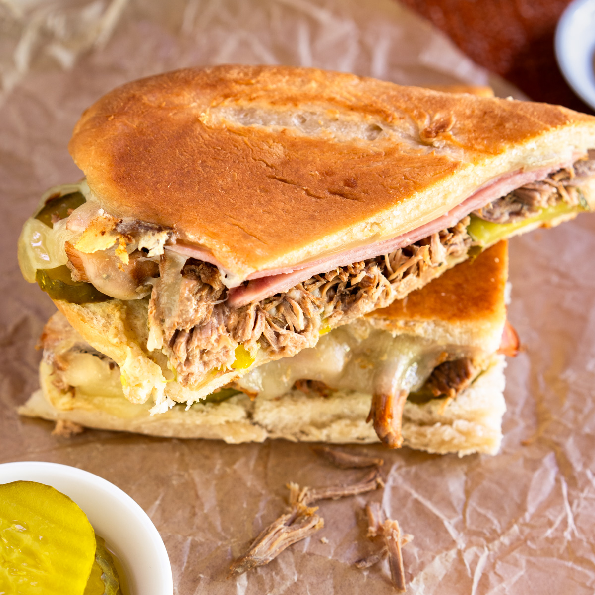

Home
Cuban Sandwhich

Description:
A classic cuban sandwhich that slaps! You'll never be able to eat a plain ham
and cheese ever again.
Ingredients:
- ¼ cup mayonnaise
- 1 pinch cayenne pepper
- 1 loaf Cuban bread
- 8 slices Swiss cheese
- 6 thin slices smoked fully-cooked ham
- 1 ½ cups cooked pulled pork, heated
- 1 large dill pickle, sliced thinly lengthwise
Steps:
- Mix mayonnaise, mustard, and cayenne together in a bowl to make sauce.
- Spread each half on both sides generously with mayo-mustard sauce.
-
Divide sandwich ingredients between the two bottom halves in this order:
2 slices Swiss cheese, 3 slices ham, hot cooked pork, pickle slices, and
2 more slices Swiss cheese. Place tops on sandwiches.
-
Melt butter in a heavy skillet over medium heat. Place sandwiches in the
skillet and press down with a heavy weight, such as another skillet or
foil-wrapped bricks. Toast sandwiches until bread is crisp and filling is
heated through, 3 or 4 minutes per side. And then enjoy!